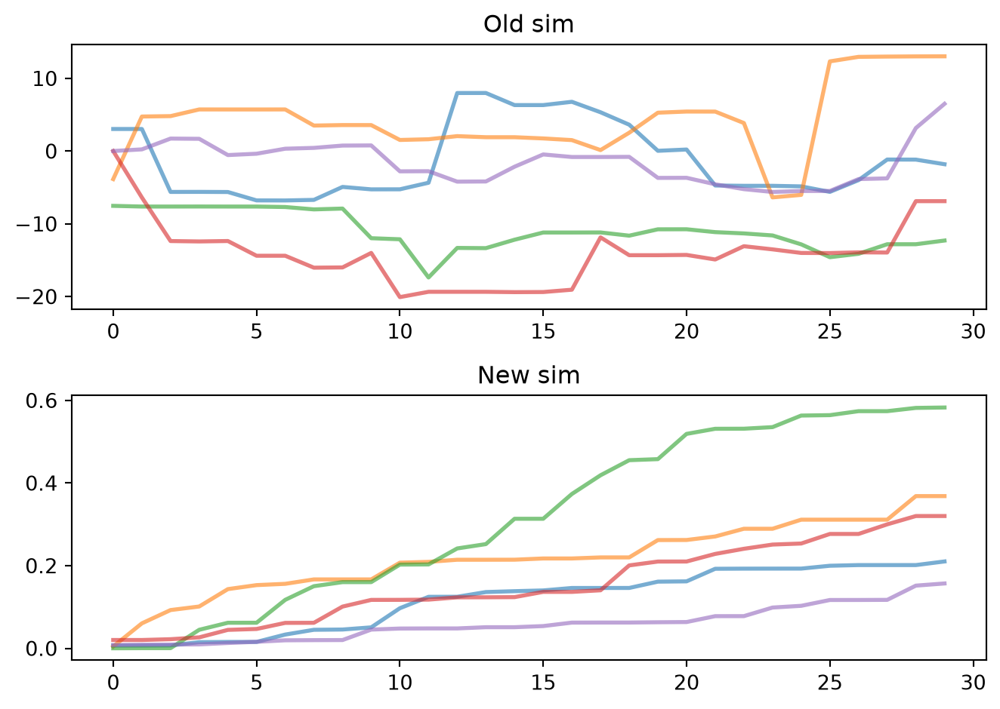

Pretty much no one hears the word “utilities” and gets excited. But you can do exciting things with boring utilities. Here’s a quick tour.
Handling types
Converting types
Python is pretty forgiving with types, but Sciris takes forgiveness to the next level. For example, in plain Python (since v3.9) you can merge two dicts with dict1 | dict2, which is pretty cool, but in Sciris you can also merge no input (i.e. None). Why is this useful? It lets you handle flexible user input, such as:
import sciris as scimport numpy as npimport matplotlib.pyplot as pltdef default_json(json=None, **kwargs): default =dict(some=1, default=2, values=3) output = sc.mergedicts(default, json, kwargs)return outputdj1 = default_json()dj2 = default_json(dict(my=4, json=5), rocks=6)print(dj1)print(dj2)
Likewise, you know that if you want to add an item to a list, you use append, and if you want to add a list to a list, you use extend, but wouldn’t it be nice if you could have Python figure this out?
['an', 'actual', 'list', 'a single item', {'not': 'a list'}]
There are also functions sc.tolist() and sc.toarray() that convert anything “sensible” to a list and array, respectively. The former is especially useful for ensuring that a user input, for example, can always be safely iterated over:
sc.toarray() is useful if you want to be sure you can, for example, do math on an object:
def power(arg, n=2): arr = sc.toarray(arg) new = arr**n output = sc.autolist() # Create an automatically incrementing listfor i,v inenumerate(new): output +=f'Entry {i}={arr[i]} has value {v}'return outputsc.pp(power(2))sc.pp(power([1,2,3,4]))
['Entry 0=2 has value 4']
['Entry 0=1 has value 1',
'Entry 1=2 has value 4',
'Entry 2=3 has value 9',
'Entry 3=4 has value 16']
“But”, you protest, “what’s the point? Can’t you just use np.array() to turn something into an array?” Let’s try it:
try:def power(arg, n=2): arr = np.array(arg) new = arr**n output = sc.autolist()for i,v inenumerate(new): output +=f'Entry {i}={arr[i]} has value {v}'return output sc.pp(power(2)) sc.pp(power([1,2,3,4]))except:print(f'Failed!! {sc.traceback()}') # Use sc.traceback() as a shortcut to get the exception
Failed!! Traceback (most recent call last):
File "/tmp/ipykernel_2556/943375089.py", line 10, in <module>
sc.pp(power(2))
~~~~~^^^
File "/tmp/ipykernel_2556/943375089.py", line 6, in power
for i,v in enumerate(new):
~~~~~~~~~^^^^^
TypeError: 'numpy.int64' object is not iterable
So: often you can, yes, but not always. sc.toarray() will handle edge cases more carefully than simply calling np.array().
Checking types
Sciris also includes some simple type checking functions. For example, in regular Python, just to check if something is a number or not, you need to import the whole numbers module:
v1 =3v2 =3.145jv3 ='3.145'print(sc.isnumber(v1)) # Equivalent to isinstance(v1, numbers.Number)print(sc.isnumber(v2))print(sc.isnumber(v3))
True
True
False
Miscellaneous tools
Here are yet more tools that can be helpful, but don’t really belong anywhere else. Such as this one:
Much of the web runs on Python, and there are some super powerful web libraries (such as requests). But what if you don’t need something super powerful, and want something that just works? sc.download() does just that, and can either load the downloaded data directly into memory, or save it to disk:
# Define the URLs to download -- from Project Gutenbergurls = ['https://www.gutenberg.org/cache/epub/1513/pg1513.txt', # Romeo and Juliet'https://www.gutenberg.org/cache/epub/11/pg11.txt', # Alice in Wonderland]# Download the datadata = sc.download(urls, save=False)# Count occurrencesprint(f"Juliet is named {data[0].lower().count('juliet')} times in Romeo and Juliet.")print(f"Alice is named {data[1].lower().count('alice')} times in Alice in Wonderland.")
Downloading 2 URLs...
Time to download 2 URLs: 0.727 s
Juliet is named 194 times in Romeo and Juliet.
Alice is named 403 times in Alice in Wonderland.
(Don’t get the idea that sc.download()isn’t super powerful. It downloads multiple URLs in parallel, handles exceptions elegantly, can either save to disk or load into memory, etc.)
Running commands
If you use Linux (or Mac), you probably do a lot of things in the terminal. There are several ways of doing this in Python, including os.system(), subprocess.run(), and subprocess.Popen(). But if you want to just quickly run something, you can use sc.runcommand():
out = sc.runcommand('ls *.qmd', printoutput=True) # NB, won't work on Windows!print(f'There are {len(out.splitlines())} Sciris tutorials.')
tut_advanced.qmd
tut_arrays.qmd
tut_dates.qmd
tut_dicts.qmd
tut_files.qmd
tut_intro.qmd
tut_parallel.qmd
tut_plotting.qmd
tut_printing.qmd
tut_utils.qmd
There are 10 Sciris tutorials.
Note that in general, terminal/shell commands are platform specific. The better way of listing the tutorials would be sc.getfilelist('*.qmd').
Import by path
You’re probably pretty familiar with the sys.path.append() syntax for adding a folder to the Python path for loading modules that haven’t been installed. But this is clunky: it’s global, and you can’t import two modules with the same name. sc.importbypath fixes this. For example, let’s say we have two different versions of the same code, sim1/sim.py and sim2/sim.py that we want to compare:
# Import both versionsold = sc.importbypath('sim1/sim.py')new = sc.importbypath('sim2/sim.py')# Run both versionssims = sc.odict()sims['Old sim'] = old.Sim().run()sims['New sim'] = new.Sim().run()# Plot both side by sideplt.figure()for i, label, sim in sims.enumitems(): plt.subplot(2,1,i+1) sim.plot() plt.title(label)sc.figlayout()

Let’s load the source code for both and see where they differ:
Sciris provides a built-in help, sc.help(), that can do a text search through its entire source code. For example, let’s say you remembered there was a function that did interpolation, but forgot what it was called:
sc.help('interpol')
Found 8 matches for "interpol" among 287 available functions:
alpinecolormap: 1 matches
fillnans: 1 matches
gauss1d: 3 matches
gauss2d: 3 matches
rmnans: 3 matches
rolling: 1 matches
sanitize: 3 matches
smoothinterp: 5 matches
If you want more detail, you can use context=True:
sc.help('interpol', context=True)
Found 8 matches for "interpol" among 287 available functions:
—————————————————————————
alpinecolormap: 1 matches
—————————————————————————
14: plt.imshow(np.random.randn(20,20), interpolation='none', cmap=sc.alpinecolormap())
————————————————————————————————————————————————————————————
———————————————————
fillnans: 1 matches
———————————————————
1: Alias for `sc.sanitize(..., replacenans=True)` with nearest interpolation
————————————————————————————————————————————————————————————
——————————————————
gauss1d: 3 matches
——————————————————
3: Create smooth interpolation of input points at interpolated points. If no points
9: xi (arr): 1D list of points to calculate the interpolated y
30: # Plot original and interpolated versions
————————————————————————————————————————————————————————————
——————————————————
gauss2d: 3 matches
——————————————————
3: Create smooth interpolation of input points at interpolated points. Can handle
10: xi (arr): 1D or 2D array of points to calculate the interpolated Z; if None, same as x
43: # Plot oiginal and interpolated versions
————————————————————————————————————————————————————————————
—————————————————
rmnans: 3 matches
—————————————————
10: replacenans (float/str) : whether to replace the NaNs with the specified value, or if `True` or a string, using interpolation
21: sanitized2 = sc.sanitize(data, replacenans=True) # Replace NaNs using nearest neighbor interpolation
23: sanitized4 = sc.sanitize(data, replacenans='linear') # Replace NaNs using linear interpolation
————————————————————————————————————————————————————————————
——————————————————
rolling: 1 matches
——————————————————
7: replacenans (bool/float): if None, leave NaNs; if False, remove them; if a value, replace with that value; if the string 'nearest' or 'linear', do interpolation (see `sc.rmnans()` for details)
————————————————————————————————————————————————————————————
———————————————————
sanitize: 3 matches
———————————————————
10: replacenans (float/str) : whether to replace the NaNs with the specified value, or if `True` or a string, using interpolation
21: sanitized2 = sc.sanitize(data, replacenans=True) # Replace NaNs using nearest neighbor interpolation
23: sanitized4 = sc.sanitize(data, replacenans='linear') # Replace NaNs using linear interpolation
————————————————————————————————————————————————————————————
———————————————————————
smoothinterp: 5 matches
———————————————————————
1: Smoothly interpolate over values
7: newx (arr): the points at which to interpolate
13: method (str): the type of interpolation to use (options are 'linear' or 'nearest')
23: from scipy import interpolate
30: si_y = interpolate.interp1d(origx, origy, 'cubic')(newx)
————————————————————————————————————————————————————————————